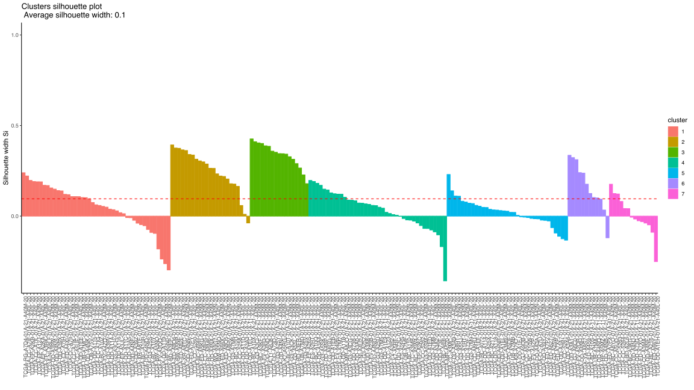

Analysis of TCGA RPPA LIHC samples
Jovan Tanevski
2021-08-02
Last updated: 2021-08-02
Checks: 7 0
Knit directory: Multispectral HCC/
This reproducible R Markdown analysis was created with workflowr (version 1.6.2). The Checks tab describes the reproducibility checks that were applied when the results were created. The Past versions tab lists the development history.
Great! Since the R Markdown file has been committed to the Git repository, you know the exact version of the code that produced these results.
Great job! The global environment was empty. Objects defined in the global environment can affect the analysis in your R Markdown file in unknown ways. For reproduciblity it’s best to always run the code in an empty environment.
The command set.seed(20210728) was run prior to running the code in the R Markdown file. Setting a seed ensures that any results that rely on randomness, e.g. subsampling or permutations, are reproducible.
Great job! Recording the operating system, R version, and package versions is critical for reproducibility.
Nice! There were no cached chunks for this analysis, so you can be confident that you successfully produced the results during this run.
Great job! Using relative paths to the files within your workflowr project makes it easier to run your code on other machines.
Great! You are using Git for version control. Tracking code development and connecting the code version to the results is critical for reproducibility.
The results in this page were generated with repository version 21cf743. See the Past versions tab to see a history of the changes made to the R Markdown and HTML files.
Note that you need to be careful to ensure that all relevant files for the analysis have been committed to Git prior to generating the results (you can use wflow_publish or wflow_git_commit). workflowr only checks the R Markdown file, but you know if there are other scripts or data files that it depends on. Below is the status of the Git repository when the results were generated:
Ignored files:
Ignored: .DS_Store
Ignored: .Rhistory
Ignored: .Rproj.user/
Ignored: code/
Ignored: data/
Ignored: old/
Ignored: output/
Untracked files:
Untracked: analysis/cores.Rmd
Note that any generated files, e.g. HTML, png, CSS, etc., are not included in this status report because it is ok for generated content to have uncommitted changes.
These are the previous versions of the repository in which changes were made to the R Markdown (analysis/tcga.Rmd) and HTML (docs/tcga.html) files. If you’ve configured a remote Git repository (see ?wflow_git_remote), click on the hyperlinks in the table below to view the files as they were in that past version.
| File | Version | Author | Date | Message |
|---|---|---|---|---|
| Rmd | 21cf743 | Jovan Tanevski | 2021-08-02 | rank normalization, leiden analysis, diff exp |
| html | a386eaa | Jovan Tanevski | 2021-07-28 | Build site. |
| Rmd | 9ab4acc | Jovan Tanevski | 2021-07-28 | Build site. |
| Rmd | bd05dbf | Jovan Tanevski | 2021-07-28 | add expression profiles |
| html | e45bf1d | Jovan Tanevski | 2021-07-28 | Build site. |
| Rmd | dcab1bf | Jovan Tanevski | 2021-07-28 | set figure output to svg |
| html | 33e71a0 | Jovan Tanevski | 2021-07-28 | Build site. |
| Rmd | bb998b8 | Jovan Tanevski | 2021-07-28 | hclust with factoextra |
| html | 1cb80af | Jovan Tanevski | 2021-07-28 | Build site. |
| Rmd | d0b6e0f | Jovan Tanevski | 2021-07-28 | add pca to tcga analysis |
| html | d73f586 | Jovan Tanevski | 2021-07-28 | Build site. |
| Rmd | c4324f5 | Jovan Tanevski | 2021-07-28 | add umap |
| html | 0bfae68 | Jovan Tanevski | 2021-07-28 | Build site. |
| Rmd | 82e3712 | Jovan Tanevski | 2021-07-28 | add basic hclust |
Setup
Load required libraries.
library(tidyverse)
library(skimr)
library(uwot)
library(factoextra)
library(cowplot)
library(FNN)
library(igraph)
library(leiden)
library(limma)Read filtered TCGA RRPA data and display summary statistics.
tcga.raw <- read_csv("data/TCGA-RPPA-LIHC_selected.csv", col_types = cols()) %>%
select(-TumorType) %>%
column_to_rownames("SampleID")
skim(tcga.raw)| Name | tcga.raw |
| Number of rows | 184 |
| Number of columns | 12 |
| _______________________ | |
| Column type frequency: | |
| numeric | 12 |
| ________________________ | |
| Group variables | None |
Variable type: numeric
| skim_variable | n_missing | complete_rate | mean | sd | p0 | p25 | p50 | p75 | p100 | hist |
|---|---|---|---|---|---|---|---|---|---|---|
| P53 | 0 | 1 | -1.13 | 0.46 | -2.54 | -1.40 | -0.96 | -0.76 | -0.51 | ▁▂▂▅▇ |
| AKT_pS473 | 0 | 1 | -0.63 | 0.71 | -2.76 | -1.02 | -0.41 | -0.15 | 0.96 | ▁▂▃▇▁ |
| AKT_pT308 | 0 | 1 | 0.07 | 0.42 | -1.16 | -0.07 | 0.09 | 0.22 | 1.72 | ▁▃▇▁▁ |
| BETACATENIN | 0 | 1 | 1.50 | 0.72 | -1.30 | 1.08 | 1.51 | 1.87 | 3.70 | ▁▁▇▅▁ |
| JNK_pT183Y185 | 0 | 1 | -0.21 | 0.29 | -1.14 | -0.36 | -0.17 | -0.04 | 0.48 | ▁▂▇▇▂ |
| MEK1_pS217S221 | 0 | 1 | -0.17 | 0.36 | -0.82 | -0.35 | -0.23 | -0.10 | 2.58 | ▇▃▁▁▁ |
| P38_pT180Y182 | 0 | 1 | 0.49 | 0.57 | -1.45 | 0.31 | 0.50 | 0.72 | 2.95 | ▁▂▇▁▁ |
| P70S6K_pT389 | 0 | 1 | -1.21 | 0.75 | -3.22 | -1.58 | -0.95 | -0.65 | 1.09 | ▂▃▇▃▁ |
| PDK1_pS241 | 0 | 1 | 0.40 | 0.31 | -0.56 | 0.23 | 0.37 | 0.55 | 1.62 | ▁▇▇▂▁ |
| S6_pS235S236 | 0 | 1 | -0.72 | 0.75 | -3.53 | -1.06 | -0.67 | -0.36 | 1.12 | ▁▁▅▇▂ |
| YAP_pS127 | 0 | 1 | 2.21 | 0.61 | 0.68 | 1.78 | 2.10 | 2.54 | 4.05 | ▁▇▇▂▁ |
| TRANSGLUTAMINASE | 0 | 1 | -0.42 | 0.56 | -1.24 | -0.83 | -0.59 | -0.20 | 2.72 | ▇▃▁▁▁ |
Rank normalize as suggested in https://gdac.broadinstitute.org/runs/analyses__2016_01_28/reports/cancer/LIHC/RPPA_Clustering_CNMF/nozzle.html
tcga <- mutate_all(tcga.raw, rank)Dimensionality reduction
tcga.pca <- prcomp(tcga)
summary(tcga.pca)Importance of components:
PC1 PC2 PC3 PC4 PC5 PC6
Standard deviation 112.2545 66.8808 57.91412 54.79530 52.30290 45.98226
Proportion of Variance 0.3702 0.1314 0.09853 0.08821 0.08036 0.06211
Cumulative Proportion 0.3702 0.5016 0.60012 0.68833 0.76869 0.83081
PC7 PC8 PC9 PC10 PC11 PC12
Standard deviation 41.5038 35.65454 34.96764 28.14257 23.00992 14.8757
Proportion of Variance 0.0506 0.03735 0.03592 0.02327 0.01555 0.0065
Cumulative Proportion 0.8814 0.91876 0.95468 0.97795 0.99350 1.0000tcga.umap <- umap(tcga, n_neighbors = 5, n_epochs = 1000)Hierarchical clustering
Perform hierarchical clustering of the data and plot the resulting dendrogram
tcga.hclust <- eclust(tcga, "hclust")Warning: `guides(<scale> = FALSE)` is deprecated. Please use `guides(<scale> =
"none")` instead.fviz_dend(tcga.hclust, rect = TRUE)Warning: `guides(<scale> = FALSE)` is deprecated. Please use `guides(<scale> =
"none")` instead.
| Version | Author | Date |
|---|---|---|
| a386eaa | Jovan Tanevski | 2021-07-28 |
fviz_gap_stat(tcga.hclust$gap_stat)
fviz_silhouette(tcga.hclust) +
theme_classic() +
theme(axis.text.x = element_text(angle = 90, hjust = 1)) cluster size ave.sil.width
1 1 43 0.05
2 2 23 0.25
3 3 17 0.34
4 4 40 0.03
5 5 35 0.02
6 6 12 0.16
7 7 14 0.01
Plot in 2D PCA and UMAP
fviz_pca_ind(tcga.pca, geom = "point", col.ind = as.factor(tcga.hclust$cluster)) +
theme_classic()
tcga.umap.clus <-
tcga.umap %>%
cbind(tcga.hclust$cluster) %>%
`colnames<-`(c("U1", "U2", "Cluster")) %>%
as_tibble() %>%
mutate_at("Cluster", as.factor)
ggplot(tcga.umap.clus, aes(x = U1, y = U2, color = Cluster)) +
geom_point() +
theme_classic()
Expression profiles per cluster
tcga.clustered <- tcga.raw %>%
mutate(Cluster = as.factor(tcga.hclust$cluster)) %>%
pivot_longer(names_to = "Marker", values_to = "Z", -Cluster)
profiles <- seq_len(tcga.hclust$nbclust) %>% map(~
ggplot(
tcga.clustered %>% filter(Cluster == .x),
aes(x = Marker, y = Z, color = Marker)
) +
stat_summary(fun.data = mean_sdl, show.legend = FALSE) +
ylim(-3, 3) +
theme_classic() +
theme(axis.text.x = element_text(angle = 90, hjust = 1)))
plot_grid(plotlist = profiles, labels = paste("Cluster", seq_len(tcga.hclust$nbclust)))Warning: Removed 17 rows containing non-finite values (stat_summary).Warning: Removed 2 rows containing missing values (geom_segment).Warning: Removed 2 rows containing non-finite values (stat_summary).Warning: Removed 6 rows containing non-finite values (stat_summary).Warning: Removed 2 rows containing missing values (geom_segment).Warning: Removed 4 rows containing non-finite values (stat_summary).Warning: Removed 1 rows containing missing values (geom_segment).Warning: Removed 4 rows containing non-finite values (stat_summary).Warning: Removed 1 rows containing missing values (geom_segment).
Differential expression analysis
design <- model.matrix(~0 + as.factor(tcga.hclust$cluster))
colnames(design) <- paste0("Cluster", seq_len(tcga.hclust$nbclust))
tcga.hclust.limma <- lmFit(t(tcga.raw), design = design)
tcga.hclust.limma$coefficients Cluster1 Cluster2 Cluster3 Cluster4 Cluster5
P53 -0.83287575 -1.63930495 -0.686920525 -0.77840188 -1.45188350
AKT_pS473 -0.30863644 -1.33879677 -0.006580675 -0.21834276 -1.32477306
AKT_pT308 0.08732521 -0.27177766 0.218564880 0.18469631 -0.29203272
BETACATENIN 1.57155636 2.31044844 1.039230839 1.56262878 1.21849982
JNK_pT183Y185 -0.11316242 -0.53603513 -0.020171999 -0.06052635 -0.32400742
MEK1_pS217S221 -0.24976273 -0.31018141 -0.253137701 -0.23604609 0.05052373
P38_pT180Y182 0.51223883 0.02056018 0.769874692 0.58845685 0.63984603
P70S6K_pT389 -0.77571779 -1.94795561 -0.534009436 -0.69535853 -1.62072380
PDK1_pS241 0.38756470 0.59045467 0.116197084 0.16495428 0.63423716
S6_pS235S236 -0.67758055 -1.43636690 -0.361153007 -0.40006282 -0.97855764
YAP_pS127 2.03602902 3.00731625 1.850386691 2.08600134 2.04093606
TRANSGLUTAMINASE -0.74859832 -0.22338223 -0.911213400 -0.13653922 -0.45593106
Cluster6 Cluster7
P53 -1.59199405 -1.55125427
AKT_pS473 -1.36858380 -0.01857768
AKT_pT308 0.16397916 0.89903051
BETACATENIN 0.69812217 1.74893447
JNK_pT183Y185 -0.18383498 -0.40070734
MEK1_pS217S221 0.26605581 -0.29766097
P38_pT180Y182 -0.02873231 0.58069604
P70S6K_pT389 -2.07460770 -1.91867762
PDK1_pS241 0.31715543 0.63407898
S6_pS235S236 -0.18619595 -0.86118068
YAP_pS127 2.57126673 2.33398982
TRANSGLUTAMINASE 0.18560297 -0.40427359tests.hclust <- decideTests(eBayes(tcga.hclust.limma))
tests.hclust@.Data Cluster1 Cluster2 Cluster3 Cluster4 Cluster5 Cluster6 Cluster7
P53 -1 -1 -1 -1 -1 -1 -1
AKT_pS473 -1 -1 0 -1 -1 -1 0
AKT_pT308 1 -1 1 1 -1 0 1
BETACATENIN 1 1 1 1 1 1 1
JNK_pT183Y185 -1 -1 0 0 -1 -1 -1
MEK1_pS217S221 -1 -1 -1 -1 0 1 -1
P38_pT180Y182 1 0 1 1 1 0 1
P70S6K_pT389 -1 -1 -1 -1 -1 -1 -1
PDK1_pS241 1 1 0 1 1 1 1
S6_pS235S236 -1 -1 -1 -1 -1 0 -1
YAP_pS127 1 1 1 1 1 1 1
TRANSGLUTAMINASE -1 -1 -1 0 -1 0 -1summary(tests.hclust) Cluster1 Cluster2 Cluster3 Cluster4 Cluster5 Cluster6 Cluster7
Down 7 8 5 5 7 4 6
NotSig 0 1 3 2 1 4 1
Up 5 3 4 5 4 4 5Similarity and graph based clustering
Calculate leiden clustering based on weighted shared nearest neighbor graph
tcga.knn <- knn.index(tcga, 10)
jaccard.cuttoff <- 0.1
snn <- seq_len(nrow(tcga.knn) - 1) %>% map_dfr(\(id){
to <- seq(id + 1, nrow(tcga.knn))
jaccard <- to %>%
map_dbl(~ length(intersect(tcga.knn[id, ], tcga.knn[.x, ])) /
length(union(tcga.knn[id, ], tcga.knn[.x, ])))
tibble(from = id, to = to, weight = jaccard) %>% filter(jaccard >= jaccard.cuttoff)
})
leiden.clusters <- graph_from_data_frame(snn, directed = FALSE) %>% leiden()Plot in 2D PCA and UMAP
fviz_pca_ind(tcga.pca, geom = "point", col.ind = as.factor(leiden.clusters)) +
theme_classic()
ggplot(tcga.umap.clus %>% mutate(Cluster = as.factor(leiden.clusters)), aes(x = U1, y = U2, color = Cluster, shape = Cluster)) +
geom_point() +
theme_classic()
Expression profiles per cluster
tcga.clustered <- tcga.raw %>%
mutate(Cluster = as.factor(leiden.clusters)) %>%
pivot_longer(names_to = "Marker", values_to = "Z", -Cluster)
profiles <- seq_len(max(leiden.clusters)) %>% map(~
ggplot(
tcga.clustered %>% filter(Cluster == .x),
aes(x = Marker, y = Z, color = Marker)
) +
stat_summary(fun.data = mean_sdl, show.legend = FALSE) +
ylim(-3, 3) +
theme_classic() +
theme(axis.text.x = element_text(angle = 90, hjust = 1)))
plot_grid(plotlist = profiles, labels = paste("Cluster", seq_len(max(leiden.clusters))))Warning: Removed 3 rows containing non-finite values (stat_summary).Warning: Removed 2 rows containing non-finite values (stat_summary).Warning: Removed 10 rows containing non-finite values (stat_summary).Warning: Removed 2 rows containing missing values (geom_segment).Warning: Removed 18 rows containing non-finite values (stat_summary).Warning: Removed 3 rows containing missing values (geom_segment).
Differential expression analysis
design <- model.matrix(~0 + as.factor(leiden.clusters))
colnames(design) <- paste0("Cluster", seq_len(max(leiden.clusters)))
tcga.leiden.limma <- lmFit(t(tcga.raw), design = design)
tcga.leiden.limma$coefficients Cluster1 Cluster2 Cluster3 Cluster4
P53 -0.75029544 -0.9870122 -1.51672869 -1.62658045
AKT_pS473 -0.16113005 -0.3533200 -1.27991420 -1.12989679
AKT_pT308 0.19555468 0.2035062 -0.17671548 -0.04212712
BETACATENIN 1.18510360 1.8235010 1.27757923 2.07126819
JNK_pT183Y185 -0.02300696 -0.2064076 -0.31307523 -0.50129870
MEK1_pS217S221 -0.17440446 -0.3051275 0.07343255 -0.31277561
P38_pT180Y182 0.67619204 0.5538698 0.41787648 0.03821177
P70S6K_pT389 -0.60420227 -1.0167173 -1.84214467 -1.94981438
PDK1_pS241 0.21483799 0.3921259 0.55399490 0.59887501
S6_pS235S236 -0.42410533 -0.6770533 -0.78767121 -1.38208606
YAP_pS127 2.03851712 2.0264491 2.26452586 2.81978691
TRANSGLUTAMINASE -0.51918229 -0.5005272 -0.19971501 -0.42541501tests.leiden <- decideTests(eBayes(tcga.leiden.limma))
tests.leiden@.Data Cluster1 Cluster2 Cluster3 Cluster4
P53 -1 -1 -1 -1
AKT_pS473 -1 -1 -1 -1
AKT_pT308 1 1 -1 0
BETACATENIN 1 1 1 1
JNK_pT183Y185 0 -1 -1 -1
MEK1_pS217S221 -1 -1 0 -1
P38_pT180Y182 1 1 1 0
P70S6K_pT389 -1 -1 -1 -1
PDK1_pS241 1 1 1 1
S6_pS235S236 -1 -1 -1 -1
YAP_pS127 1 1 1 1
TRANSGLUTAMINASE -1 -1 -1 -1summary(tests.leiden) Cluster1 Cluster2 Cluster3 Cluster4
Down 6 7 7 7
NotSig 1 0 1 2
Up 5 5 4 3
sessionInfo()R version 4.1.0 (2021-05-18)
Platform: x86_64-apple-darwin17.0 (64-bit)
Running under: macOS Big Sur 10.16
Matrix products: default
BLAS: /Library/Frameworks/R.framework/Versions/4.1/Resources/lib/libRblas.dylib
LAPACK: /Library/Frameworks/R.framework/Versions/4.1/Resources/lib/libRlapack.dylib
locale:
[1] en_US.UTF-8/en_US.UTF-8/en_US.UTF-8/C/en_US.UTF-8/en_US.UTF-8
attached base packages:
[1] stats graphics grDevices utils datasets methods base
other attached packages:
[1] limma_3.48.1 leiden_0.3.9 igraph_1.2.6 FNN_1.1.3
[5] cowplot_1.1.1 factoextra_1.0.7 uwot_0.1.10 Matrix_1.3-4
[9] skimr_2.1.3 forcats_0.5.1 stringr_1.4.0 dplyr_1.0.7
[13] purrr_0.3.4 readr_2.0.0 tidyr_1.1.3 tibble_3.1.3
[17] ggplot2_3.3.5 tidyverse_1.3.1 workflowr_1.6.2
loaded via a namespace (and not attached):
[1] colorspace_2.0-2 ggsignif_0.6.2 ellipsis_0.3.2
[4] rio_0.5.27 rprojroot_2.0.2 htmlTable_2.2.1
[7] base64enc_0.1-3 fs_1.5.0 rstudioapi_0.13
[10] ggpubr_0.4.0 farver_2.1.0 ggrepel_0.9.1
[13] bit64_4.0.5 RSpectra_0.16-0 fansi_0.5.0
[16] lubridate_1.7.10 xml2_1.3.2 splines_4.1.0
[19] knitr_1.33 Formula_1.2-4 jsonlite_1.7.2
[22] broom_0.7.9 cluster_2.1.2 dbplyr_2.1.1
[25] png_0.1-7 compiler_4.1.0 httr_1.4.2
[28] backports_1.2.1 assertthat_0.2.1 cli_3.0.1
[31] later_1.2.0 htmltools_0.5.1.1 tools_4.1.0
[34] gtable_0.3.0 glue_1.4.2 Rcpp_1.0.7
[37] carData_3.0-4 cellranger_1.1.0 jquerylib_0.1.4
[40] vctrs_0.3.8 xfun_0.24 openxlsx_4.2.4
[43] rvest_1.0.1 lifecycle_1.0.0 rstatix_0.7.0
[46] dendextend_1.15.1 scales_1.1.1 vroom_1.5.3
[49] hms_1.1.0 promises_1.2.0.1 parallel_4.1.0
[52] RColorBrewer_1.1-2 yaml_2.2.1 curl_4.3.2
[55] reticulate_1.20 gridExtra_2.3 sass_0.4.0
[58] rpart_4.1-15 latticeExtra_0.6-29 stringi_1.7.3
[61] highr_0.9 checkmate_2.0.0 zip_2.2.0
[64] repr_1.1.3 rlang_0.4.11 pkgconfig_2.0.3
[67] evaluate_0.14 lattice_0.20-44 htmlwidgets_1.5.3
[70] labeling_0.4.2 bit_4.0.4 tidyselect_1.1.1
[73] magrittr_2.0.1 R6_2.5.0 generics_0.1.0
[76] Hmisc_4.5-0 DBI_1.1.1 pillar_1.6.2
[79] haven_2.4.1 whisker_0.4 foreign_0.8-81
[82] withr_2.4.2 nnet_7.3-16 survival_3.2-11
[85] abind_1.4-5 modelr_0.1.8 crayon_1.4.1
[88] car_3.0-11 utf8_1.2.2 tzdb_0.1.2
[91] rmarkdown_2.9 jpeg_0.1-9 viridis_0.6.1
[94] grid_4.1.0 readxl_1.3.1 data.table_1.14.0
[97] git2r_0.28.0 reprex_2.0.0 digest_0.6.27
[100] httpuv_1.6.1 munsell_0.5.0 viridisLite_0.4.0
[103] bslib_0.2.5.1